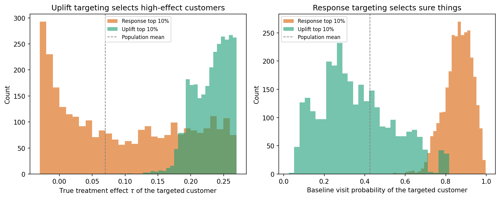
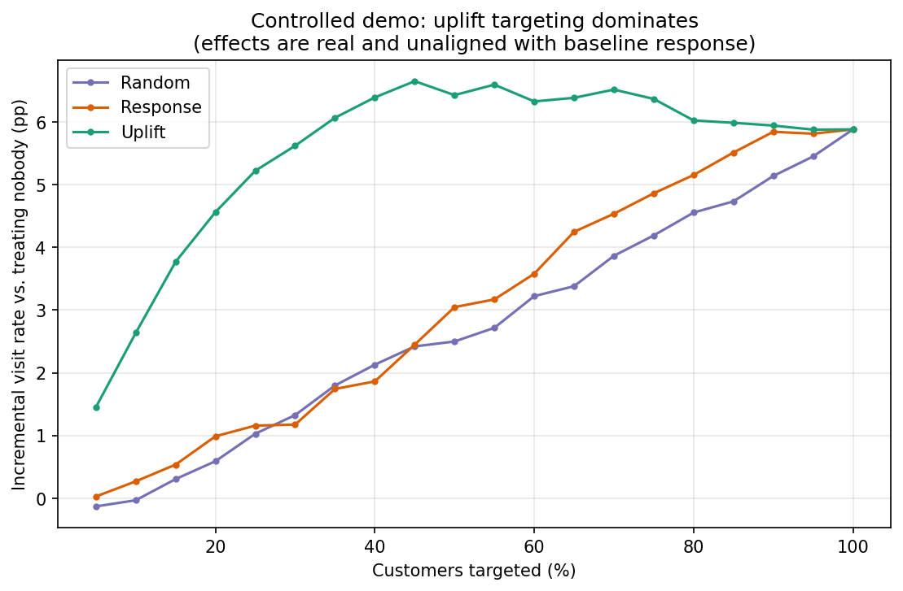
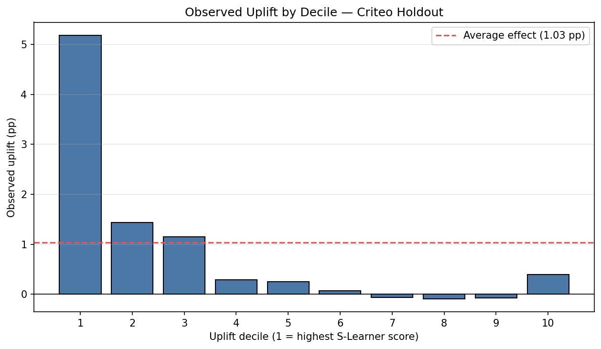
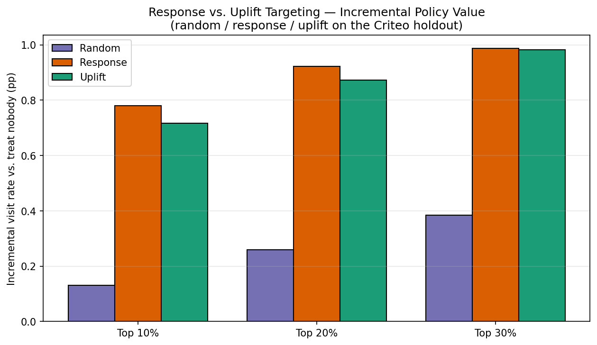
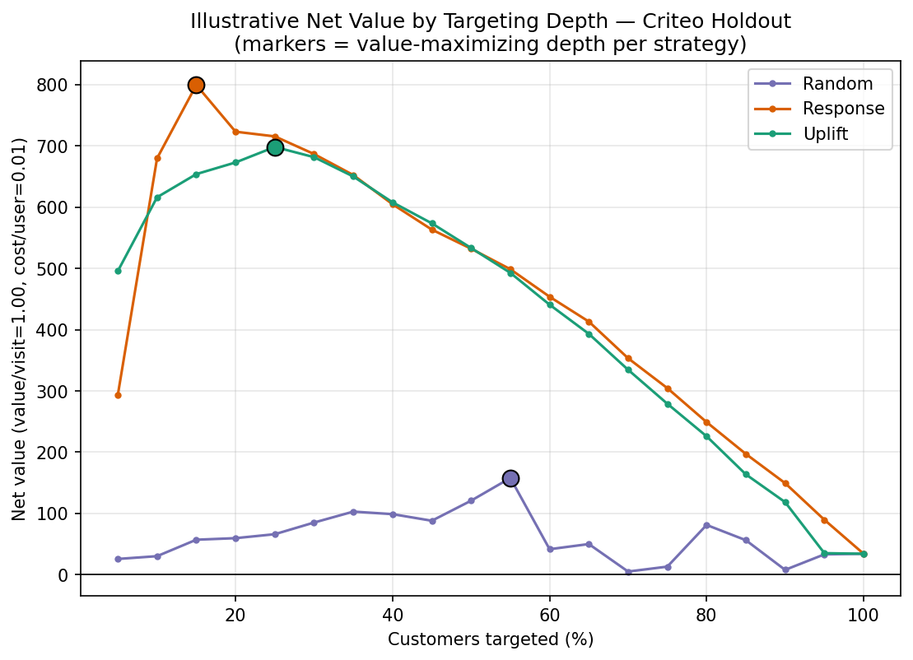

3.5 Uplift Modeling for Targeting
Who should you actually target to maximize sales? Most marketing teams rank customers with a response model: predict who is most likely to act (buy, visit, convert), then aim the budget at the top of that list. That is a reasonable instinct, but it answers only half the question. The other half is whether your action changed anything.
Many customers near the top of a response list would have acted anyway. Spending on them adds cost without adding outcomes. The customers who matter are the ones whose behavior changes because of the treatment, and they are not always the ones most likely to act. So there are two different scores you could rank by:
- A response model predicts: \(P(\text{purchase})\)
- An uplift model predicts: \(P(\text{purchase} \mid \text{treated}) - P(\text{purchase} \mid \text{not treated})\)
A response model ranks customers by how likely they are to act. An uplift model ranks them by how much the treatment changes their behavior. These can be very different people: a customer with an 80% chance of buying might have zero uplift (a Sure Thing), while someone at 30% might have 15% uplift (a Persuadable). Which score actually makes you more money is an empirical question. This chapter answers it by testing both on real experimental data, not by assuming uplift wins.

The Four Customer Types
Now, let’s take a closer look at the customers to be targeted. We can segment them into four types based on how they respond to treatment:

- Persuadables: Will act only if they receive the treatment. These are the ideal targets: the treatment changes their behavior. Your entire marketing ROI comes from this group.
- Sure Things: Will act no matter what. Treating them costs you the spend but generates no incremental revenue.
- Lost Causes: Won’t act regardless of treatment. Targeting them wastes the cost with nothing to show for it.
- Sleeping Dogs: Would act without the treatment, but not with it. These customers are harmed by the intervention. Contact may trigger annoyance, unsubscription, or brand damage.
“Don’t wake the Sleeping Dogs” is not just a metaphor. In real campaigns, some segments show negative uplift. Uplift modeling helps you find them so you can avoid targeting them.
These four types also explain the gap between the two scores. A response model, chasing likelihood to act, fills its list with Sure Things. An uplift model, chasing treatment effect, fills its list with Persuadables. Later in this chapter we watch each model do exactly that.
Response Models vs. Uplift Models
To act on the four types, you need a score for every customer. Two candidates compete throughout this chapter.
- Response score. Train a classifier to predict the outcome from customer features, then rank by the predicted probability. This is the standard, cheap baseline. It targets customers who are likely to act, whether or not your treatment caused it.
- Uplift score. Rank by the treatment effect itself. The CATE estimate from §3.4 is exactly this. In the worked examples that follow, the action is a site visit after seeing an ad, so the uplift score is \(\hat\tau(x) = \hat{P}(\text{visit} \mid \text{treated}, x) - \hat{P}(\text{visit} \mid \text{not treated}, x)\). Any meta-learner from §3.4 produces one. We use an S-Learner as the headline; a T-Learner is the natural sibling, and the examples keep whichever ranks better on held-out data.
# A CATE estimate from §3.4 is already a per-customer uplift score.
from econml.metalearners import SLearner, TLearner
from lightgbm import LGBMRegressor, LGBMClassifier
# Response score: rank by predicted visit probability.
response = LGBMClassifier().fit(X_train, y_train)
response_score = response.predict_proba(X_eval)[:, 1]
# Uplift score: S-Learner CATE (predicted incremental probability).
uplift = SLearner(overall_model=LGBMRegressor())
uplift.fit(Y=y_train, T=treatment_train, X=X_train)
uplift_score = uplift.effect(X_eval) # one number per held-out customerMeta-learners are not the only route to an uplift score. Some libraries (causalml, scikit-uplift) fit trees that split directly on the treatment-versus-control difference rather than on outcome purity, modeling uplift in one step. That is a valid alternative; the evaluation in the rest of this chapter grades any uplift score the same way, so we stay with the meta-learner route from §3.4.

Grading Targeting Policies
With two scores in hand, how do you decide which to trust? Not by classification accuracy. A model can predict visits beautifully and still be a poor targeting tool, because targeting is a decision about incremental outcomes. The honest test is to treat each score as a policy, “treat the top-k%, skip the rest,” and measure its value on a randomized holdout, where the experiment stands in for the counterfactual.
A few diagnostics, all computed on held-out experimental data:
- Observed uplift by decile. Rank the holdout by score, cut into ten equal groups, and compute the treated-minus-control visit rate inside each. Because treatment is randomized within every decile, this is an unbiased read of the real uplift the score is sorting on. A useful ranking puts the largest observed uplift in the top deciles.
- Uplift and Qini curves. Trace cumulative incremental visits as you walk down the ranking, best customer first. A ranking that beats random bends above the diagonal. The summary areas (AUUC, and the Qini coefficient) are relative: positive means better than random, and they compare models only on the same holdout, not on an absolute zero-to-one scale.
- Policy value by depth. For “treat the top-k%,” estimate the holdout visit rate the policy would produce (an inverse-propensity estimate that reweights the randomized holdout). This is the number a decision-maker actually cares about: how many incremental visits at each budget.
- Net value after cost. Attach economics, then subtract. We use an illustrative index, each incremental visit worth 1.0 and each targeted user costing 0.01, so break-even is a one-point uplift. Crucially, the incremental visits come from the observed holdout estimate, not the model’s predicted uplift, so the economics are grounded in the experiment rather than the model’s own optimism.
A Controlled Demo: When Uplift Wins
Before the real data, a controlled demonstration makes the intuition concrete. We build a semi-synthetic dataset where we know the true treatment effect for every customer, and we deliberately make two things independent: a customer’s baseline tendency to visit, and how much the ad moves them. Because the two are unlinked, “who is likely to visit” and “whose visit we can cause” are genuinely different people, which is the gap an uplift model exists to exploit. About a third of the customers are even slight sleeping dogs, with a small negative effect.
Fit both scores and look at who each one targets. The response model’s top 10% is packed with sure things, customers with high baseline visit probability. The uplift model’s top 10% is packed with persuadables, customers with high true effect. Same budget, different people.

Graded as policies on the holdout, the uplift model dominates. At the top 10% it lifts the incremental visit rate by 2.64 points, versus 0.27 for the response model and essentially zero for random. The uplift score tracks the true effect closely (a correlation of 0.93, against the response score’s 0.16). This is uplift modeling working exactly as advertised, because we built real, misaligned effects into the data. The honest question is whether real campaigns look like this.

The Criteo Reality Check
Now the same workflow on a large advertising experiment. The Criteo Uplift dataset is a randomized controlled trial: millions of users randomized to see an ad or not, with twelve anonymized features and a binary site-visit outcome. We use the standard 10% subset (about 1.4 million rows), train on 200,000 and grade on a 100,000-row holdout. Two deliberate choices: we treat on the randomized assignment flag, not on whether the ad was actually shown (that happens after randomization and would bias the effect), and we rank on visit (about 4.7%) rather than the much rarer conversion (about 0.3%), which is too thin to grade a ranking stably. Because the features are anonymized, this example teaches the mechanics of uplift evaluation, not which real customer segments to chase.
First, the experiment itself. Treated users visited at 4.85%, control at 3.82%, an average effect of about 1.03 points. A quick balance check confirms the randomization: a classifier trying to predict treatment from features scores 0.508, barely above a coin flip. The uplift model’s job is not to re-estimate that 1.03-point average, the experiment already gives it, but to concentrate it, putting the customers who carry most of the effect at the top of the ranking.
The ranking does concentrate, at least at the very top. The top decile by uplift score shows about 5 points of observed uplift, roughly five times the average effect. But it decays fast and the tail is noisy: the middle deciles hover near zero, and the very bottom decile swings positive again rather than negative. That bottom-decile surprise is a warning about extreme per-customer scores, which tend to track baseline visit propensity as much as true uplift.

The decisive comparison is against the response baseline, and here the result is humbling. Graded as targeting policies on the same holdout, the response model matches or beats the uplift model at every operational depth. At the top 10% the response policy adds 0.78 points of incremental visits versus uplift’s 0.72; at the top 20%, 0.92 versus 0.87; by the top 30% they are tied. The uplift score edges ahead only in the top 5%. The ranking curves agree: the response model posts a higher AUUC and Qini than the uplift model, with both well above random.

The economics tell the same story. Net value (incremental visits at the illustrative index, minus targeting cost) peaks for the response policy at the top 15% and for the uplift policy at the top 25%, and the response peak is higher. A response model is a strong, cheap baseline on this data, and the uplift model has not earned its added complexity here.

Why does uplift lose here when it won in the demo? Because on Criteo the treatment-effect signal is weak and largely aligned with baseline visit propensity: the people most likely to visit also carry most of the incremental effect, so sorting by likelihood and sorting by uplift produce nearly the same list, and the simpler model sorts it more cleanly. This is not a failure of the method but the point of the exercise. Uplift modeling is a targeting-policy framework, not a magic ranking. It earns its complexity only when baseline response and treatment effect genuinely diverge, as in the demo, and the only way to know which case you are in is to grade both on a randomized holdout, exactly as we did here.
Guardrails
A few guardrails carry over to any targeting program:
- Validate on a fresh experiment. A ranking learned on past data decays as behavior shifts. Before trusting any policy at scale, confirm its incremental value on a new randomized holdout, the same evaluation used throughout this chapter.
- Net the cost before deciding. Target the depth where incremental value clears cost, not wherever predicted scores are merely positive. The net-value curve, not the raw score, sets the budget.
- Mind the sleeping dogs. Some customers have negative uplift, and contact suppresses them. They hide in the bottom deciles, where the net-value rule already steers you away.
- Don’t confuse a good predictor with a good policy. High classification accuracy does not imply high policy value, or the reverse. Grade the decision you will actually make.
That wraps up Part 3. We started with a colleague’s claim that a coupon doubled the purchase rate, and saw it was just selection bias. From there we built a toolkit to answer the real question: not whether a campaign works on average, but who it works on, and whether acting on that is worth it. We covered A/B testing, quasi-experiments, meta-learners, and uplift modeling. The closing lesson is the one this chapter earned the hard way: a targeting model is only as good as its measured incremental value on a holdout, so grade the policy before you trust it, and spend where the experiment, not the model’s optimism, says it pays.